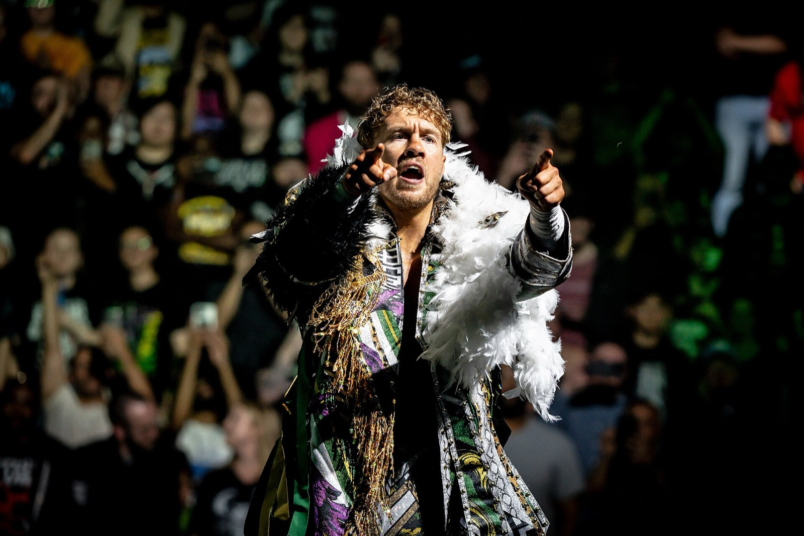

AEW Blood & Guts 2026: Callis Family contro Team Ospreay, ecco le squadre
È ufficiale. Il 4 novembre a Jacksonville la Don Callis Family sfida il Team Ospreay nella gabbia di Blood & Guts. Sei contro sei, con il ritorno di Steven Borden.
Foto in copertina: JJ Williams, Digital media staff at Wrestling Observer Newsletter, CC BY 3.0, via Wikimedia Commons
È ufficiale: AEW Blood & Guts 2026 sarà Don Callis Family contro Team Ospreay. Sei contro sei, due ring, una gabbia. Mercoledì 4 novembre a Jacksonville, in Florida.
E a lanciare la sfida è stato uno che non vedevamo da mesi: Steven Borden.
Le squadre di Blood & Guts 2026
Team Ospreay
- Will Ospreay (campione del mondo AEW)
- Adam Copeland
- Matt e Nick Jackson, gli Young Bucks
- Darby Allin
- Steven Borden
Don Callis Family
- Kazuchika Okada (campione International)
- Kyle Fletcher
- Kevin Knight
- Wardlow
- Mark Davis
- Jake Doyle
Il match si giocherà alla VyStar Veterans Memorial Arena. Per l'Italia vuol dire la notte tra mercoledì e giovedì.
Come ci siamo arrivati
Tutto è nato a Dynamite di ieri notte. Fletcher e Knight hanno battuto Ospreay e Copeland, con Okada che ci ha messo lo zampino. Poi il pestaggio, con Fletcher che colpisce Ospreay con la sua stessa cintura. Vi abbiamo raccontato tutto nei risultati di Dynamite del 21 ottobre.
A salvare Ospreay sono arrivati Young Bucks, Darby e Borden. Ed è stato Borden, rientrato dall'infortunio subito ad All Out, a chiamare la Callis Family dentro la gabbia.
Cosa cambia verso Full Gear
Blood & Guts arriva dieci giorni prima di Full Gear (14 novembre, Phoenix). E qui c'è un dettaglio: Davis e Doyle sono nella gabbia, ma a Full Gear sfidano gli Young Bucks per i titoli di coppia. Si picchieranno due volte in dieci giorni.
Non si sa ancora se tornerà anche il match femminile, che l'anno scorso aveva debuttato proprio a Blood & Guts.
Novità: Blood & Guts contro NXT, stessa sera
Aggiornamento del 22 ottobre. Quella sera la WWE non lascia campo libero all'AEW. Secondo i palinsesti TV riportati da POST Wrestling, NXT si sposta da martedì 3 a mercoledì 4 novembre, perché il 3 le reti locali della CW trasmettono le elezioni di metà mandato negli USA.
Risultato: NXT contro Dynamite: Blood & Guts, testa a testa. Per NXT è anche la prima puntata dopo Halloween Havoc (31 ottobre). L'ultima sfida diretta, il 6 ottobre, l'aveva vinta NXT come spettatori (532.000 contro 495.000, dati Wrestlenomics), mentre Dynamite aveva fatto meglio nella fascia 18-49. Le ultime puntate di NXT le trovate nei risultati di NXT del 20 ottobre.
Il mio parere
Ragazzi, Blood & Guts è il War Games dell'AEW, e quando la storia c'è funziona alla grande. Qui la storia c'è: la Callis Family è il gruppo più cattivo della compagnia, e Ospreay ha bisogno di una vendetta.
A chi piace la WWE ricordo che c'è anche il WarGames tra Bloodline e 946. Questo potrebbe essere anche più violento.
Chi vince secondo voi? Scrivetemelo nei commenti su YouTube. Le altre notizie del giorno sono in Flash News, e sull'AEW trovate anche il debutto di Ilja Dragunov.
Fonti: POST Wrestling, F4W/WON, Wrestling Inc, POST Wrestling su NXT contro Blood & Guts.
Domande frequenti
Quando c'è AEW Blood & Guts 2026?
Mercoledì 4 novembre 2026 alla VyStar Veterans Memorial Arena di Jacksonville, in Florida. In Italia è la notte tra mercoledì e giovedì.
Chi lotta nel match Blood & Guts 2026?
Il Team Ospreay (Will Ospreay, Adam Copeland, Matt e Nick Jackson, Darby Allin e Steven Borden) contro la Don Callis Family (Kazuchika Okada, Kyle Fletcher, Kevin Knight, Wardlow, Mark Davis e Jake Doyle).